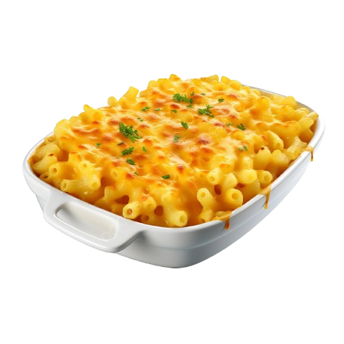
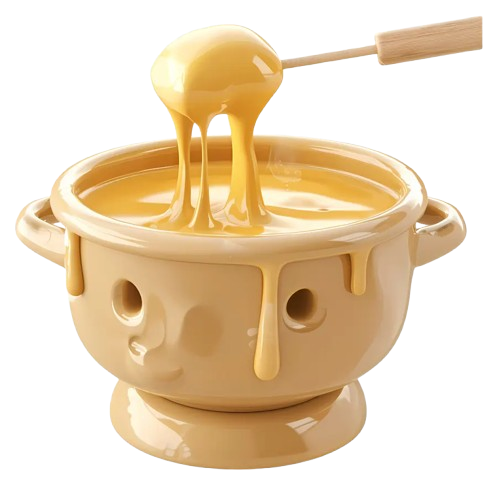
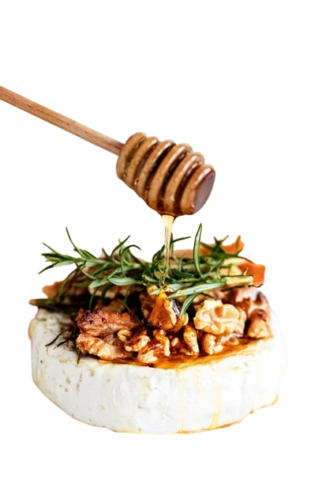
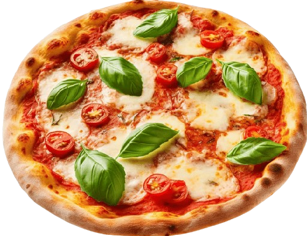
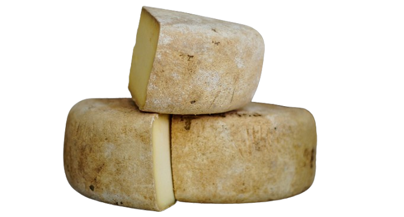
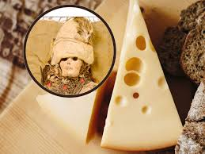
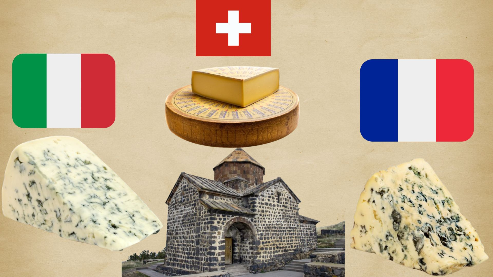
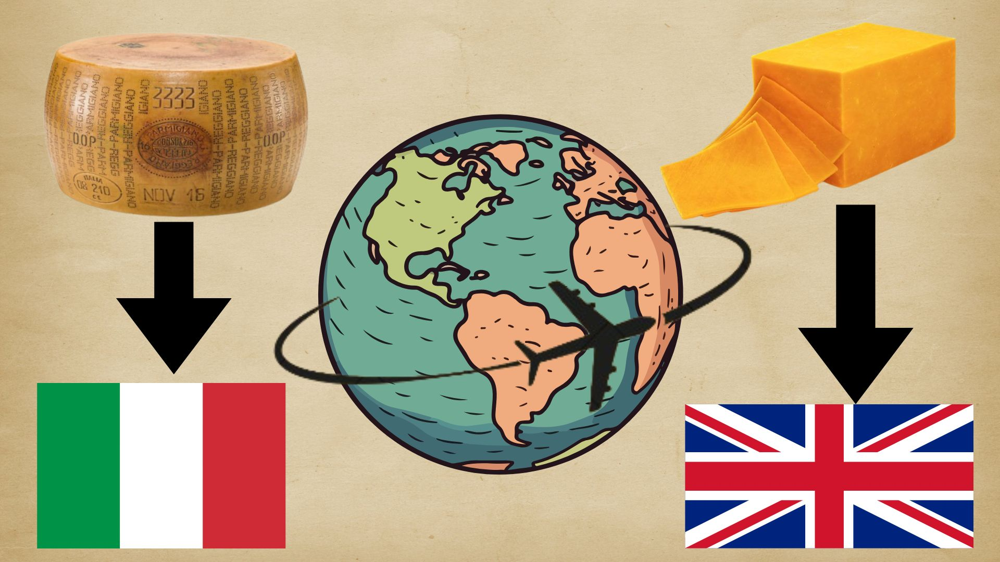
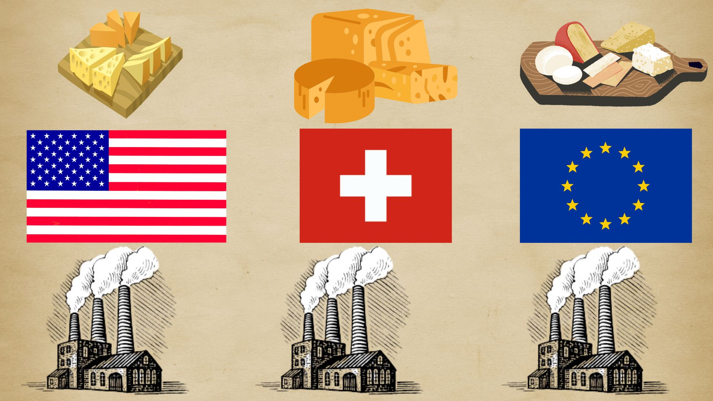

Types of Cheese by Origin
Cheeses are often categorized by their country or region of origin, showcasing unique flavors and techniques. For example:
France: Brie, Roquefort, Camembert.
Italy: Parmesan, Mozzarella, Gorgonzola.
Spain: Manchego, Idiazábal.
Each reflects its culture and tradition, making every bite a culinary journey.
Types of Cheese by Milk
Cheese can be made from different types of milk, influencing its flavor and texture:
Cow’s Milk: Creamy and mild (Cheddar, Gouda).
Goat’s Milk: Tangy and soft (Chèvre, Feta).
Sheep’s Milk: Rich and nutty (Pecorino, Manchego).
The choice of milk defines the cheese’s unique character.
Types of Cheese by Texture
Cheese textures range from soft to hard, determined by aging and moisture content:
Soft: Spreadable or creamy (Brie, Ricotta).
Semi-Hard: Balanced and sliceable (Edam, Havarti).
Hard: Firm and aged (Parmesan, Pecorino).
Perfect for every preference, from delicate spreads to robust gratings.
Ingredients: macaroni, shredded cheddar
cheese,milk, butter,
milk, butter, flour, and spices to taste.
Preparation: Cook the macaroni
in salted water.
Make a béchamel sauce with butter, flour,
and milk,then add the shredded cheddar
cheese until melted. Mix the sauce with
the macaroni,bake for a few minutes until
golden on top, and enjoy!
Mac and Cheese

Ingredients: Gruyère cheese,Emmental
cheeses white wine, garlic, and cornstarch.
Preparation: Rub a pot with garlic,
heat the white wine,and gradually
add the grated cheeses,stirring constantly.
Add a bit of cornstarch
dissolved in wine if you need to thicken it.
Serve with bread, vegetables,
or cured meats for dipping.
Cheese Fondue

Ingredients:Brie cheese,honey walnuts
walnuts or almonds,and a bit of
rosemary (optional).
Preparation: Place the Brie in
an oven-safe dish,top with honey and
nuts,then bake at 180 °C (350 °F) for
a few minutes until soft and creamy.
Serve with bread or crackers.
Baked Brie with Honey and Nuts

Ingredients: pizza dough, tomato sauce,
fresh mozzarella cheese, basil, and olive oil.
Preparation: Spread tomato sauce over
the pizza dough, place slices of mozzarella
on top, and bake at 220 °C (425 °F) until
the crust is crispy and the cheese is melted.
Add fresh basil leaves and a drizzle of
olive oil before serving.
Margherita Pizza
Origins of Cheese
(8000-3000 BCE)
Cheese traces back to the Neolithic era, when humans began domesticating sheep, goats, and cows in the Fertile Crescent. Early evidence suggests that cheese was discovered accidentally when milk was stored in animal stomach pouches. The enzyme rennet in the stomachs caused milk to curdle, creating a solid, long-lasting product that was easy to transport and store, especially in warm climates.
Expansion in the Ancient World
(3000-1000 BCE)
Cheese became essential in civilizations like Egypt, Mesopotamia, and Crete. Egyptian tombs from around 2000 BCE contain remnants of cheese and depictions of its production. The Greeks viewed cheese as a divine gift, as mentioned in Homer’s Odyssey. The Romans adopted and enhanced cheese-making techniques, developing various types and improving preservation methods, spreading cheese across Europe and North Africa.
The Middle Ages
(476-1400)
After the fall of the Roman Empire, European monasteries became hubs for cheese production. Monks experimented with techniques, creating iconic cheeses like Roquefort (France), Gruyère (Switzerland), and Gorgonzola (Italy). Cheese was a vital food for both peasants and nobility, particularly during times of famine, due to its high nutritional value and long shelf life.
The Renaissance and Modernization
(1400-1800)
During the Renaissance, cheese production and trade flourished thanks to expanding trade routes. Famous varieties like Cheddar (England, 16th century) and Parmigiano-Reggiano (Italy, 17th century) gained international acclaim. Advances in agriculture and livestock breeding enabled more consistent production, while traditional techniques continued to define artisanal cheeses.
The Industrial Revolution
(1800-1900)
The Industrial Revolution revolutionized cheese production. The invention of pasteurization by Louis Pasteur in 1864 improved safety and consistency. Cheese factories emerged in Europe and the United States, with the first factory established in Switzerland in 1815. These innovations made cheese more affordable and accessible to a broader population, transitioning it from a luxury to a staple food.
The Modern Era
(1900-Present)

In the 20th century, cheese diversified like never before. Processed cheeses, such as Velveeta and American cheese, were developed to cater to urban lifestyles and fast food. Today, there are over 2,000 cheese varieties worldwide, ranging from mass-produced to artisanal. Cheese has become a cornerstone of global cuisine, symbolizing culture and tradition across nations.